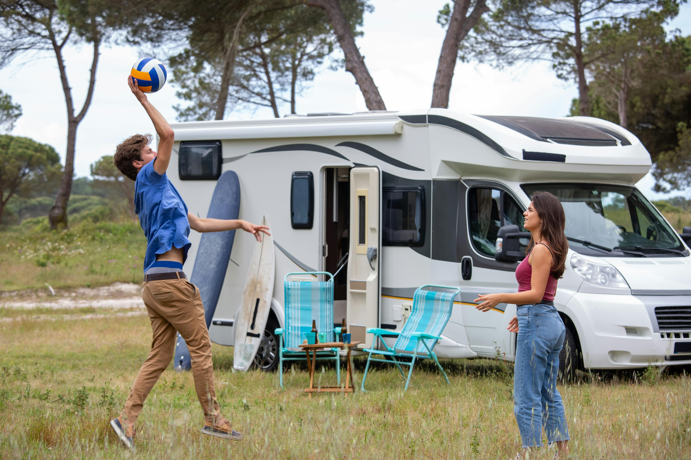

Hey all! My name is Aubrey, and this website is to help people to understand how to play volleyball. When I first started volleyball, I had a sister who was willing to teach me how to play, but when I got into high school, I learned my skills weren’t set in the right way. My website will have notes and set ways that give more control and understanding.